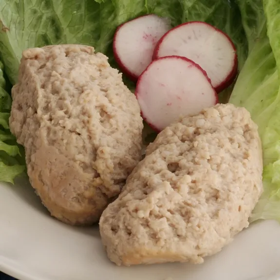

Home
Gefilte Fish
Ingredients
-
7 to 7 1/2 pounds whole carp, whitefish, and pike, filleted and ground
- 4 quarts cold water or to just cover
- 3 teaspoons salt or to taste
- 3 onions, peeled
- 4 medium carrots, peeled
- 2 tablespoons sugar or to taste
- 1 small parsnip, chopped (optional)
- 3 to 4 large eggs
- Freshly ground pepper to taste 1/2 cup cold water (approximately)
- 1/3 cup matzah meal (approximately)
Preparation Time
6 hours
Instructions
-
Place the reserved bones, skin, and fish heads in a wide, very large
saucepan with a cover. Add the water and 2 teaspoons of the salt and
bring to a boil. Remove the foam that accumulates.
-
Slice 1 onion in rounds and add along with 3 of the carrots. Add the
sugar and bring to a boil. Cover and simmer for about 20 minutes while
the fish mixture is being prepared.
-
Place the ground fish in a bowl. In a food processor finely chop the
remaining onions, the remaining carrot, and the parsnip; or mince them
by hand. Add the chopped vegetables to the ground fish.
-
Mix well by hand and put it on a large platter with the sliced yellow
pickled radish.
-
Combine the carrot matchsticks with ¼ teaspoon kosher salt. Mix well and
let it sweat for 5 to 10 minutes. Heat a pan and add a few drops
vegetable oil.
-
Squeeze out excess water from the carrot, then saute for about 1 minute.
Put it on the platter next to the spinach.
-
Trim the fat from the skirt steaks and slice into ¼ inch wide, 3 to 5
inch strips. Put the strips into a bowl. Add 2 teaspoons soy sauce, 1
minced garlic clove, ¼ teaspoon ground black pepper,1 tablespoon plus 1
teaspoon brown (or white) sugar, and 2 teaspoons toasted sesame oil.
- Mix well by hand.
- Set aside, and let them marinate while we do the egg strips.
-
Crack 3 eggs in a bowl and add ¼ teaspoon kosher salt. Beat it with fork
and remove the stringy chalaza.
-
Drizzle a few drops of oil on a heated 10 to 12 inch non-stick pan. Wipe
off the excess with a paper towel so only a thin sheen of oil remains.
Turn down the heat to low and pour the egg mixture into the pan. Spread
it into a large circle so it fills the pan.
-
When the bottom of the egg is cooked, flip it over with a spatula.
Remove from the heat and let it cook slowly in the hot pan for about 5
minutes, with the ultimate goal of keeping the egg as yellow as
possible, and not brown.
-
Cut it into ½ inch wide strips. Put it next to the spinach on the
platter.
-
Heat up a pan over medium high heat and cook the marinated beef,
stirring it with a wooden spoon until well cooked.
- Set aside.
-
Place a sheet of gim on a bamboo mat with the shiny side down. Evenly
spread about ¾ cup of cooked rice over top of it, leaving about 2 inches
uncovered on one side of the gim.
-
Place beef, carrot, yellow pickled radish strip, a few egg strips, and
spinach in the center of the rice.
-
Use both hands to roll the mat (along with gim and rice) over the
fillings, so one edge of the rice and gim reaches the opposite edge.
This centers the fillings in the roll, so they’ll be nicely in the
middle when you slice it.
-
Grab the mat with both hands and and press it tightly as you continue
rolling the gimbap. Push out the mat as you roll, so it doesn’t get
wrapped in the gimbap.
-
Remove the roll from the mat at the end and set the finished roll aside
with the seam down, to seal it nicely.
- Repeat 4 more times with the remaining ingredients.
-
Put some toasted sesame oil on the finshed rolls and sprinkle some
sesame seeds over top. Cut each roll into ¼ inch bite size pieces with a
sharp knife, occasionally wiping it with a wet paper towel or cloth to
clean the starch off and to ease cutting.
- Put it on a plate and serve immediately or pack it in a lunchbox.
